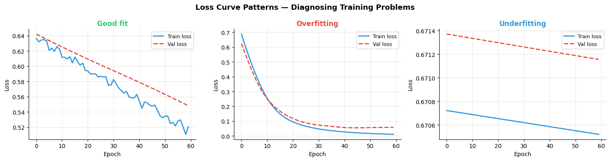
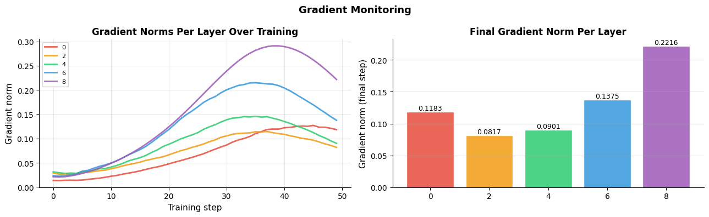
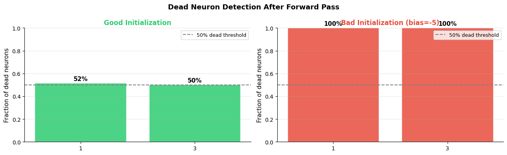
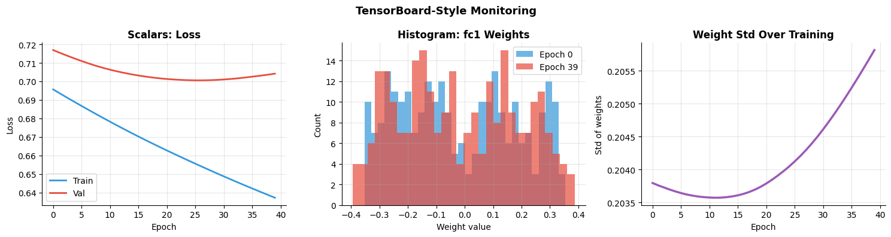

How do you debug and monitor training?#
Topics: Loss Curves · Gradient Norms · NaN Detection · Dead Neurons · TensorBoard · model.eval() · torch.no_grad()
1. Reading Loss Curves#
What it is#
Plot of training and validation loss over epochs
Most informative diagnostic tool during training
How to interpret#
Pattern |
Diagnosis |
Fix |
|---|---|---|
Both losses high |
Underfitting |
Bigger model, more epochs |
Train low, val high |
Overfitting |
Dropout, regularization, more data |
Loss not decreasing |
LR too low or bug |
Increase LR, check data pipeline |
Loss oscillates wildly |
LR too high |
Reduce LR |
Loss explodes to NaN |
LR way too high or gradient explosion |
Reduce LR, gradient clipping |
Val loss lower than train |
Data leakage or eval during dropout |
Check train/eval mode |
Gotchas#
Always plot both train AND val loss — train loss alone tells you nothing about generalization
Loss going down does not mean accuracy is going up — track both
import torch
import torch.nn as nn
import matplotlib.pyplot as plt
import numpy as np
torch.manual_seed(42)
def simulate_training(scenario, epochs=60):
X = torch.randn(500, 8)
y = (X[:, 0] > 0).long()
train_losses, val_losses = [], []
if scenario == 'good':
model = nn.Sequential(nn.Linear(8, 16), nn.ReLU(), nn.Dropout(0.2), nn.Linear(16, 2))
opt = torch.optim.Adam(model.parameters(), lr=1e-3)
elif scenario == 'overfit':
model = nn.Sequential(nn.Linear(8, 256), nn.ReLU(), nn.Linear(256, 256), nn.ReLU(), nn.Linear(256, 2))
opt = torch.optim.Adam(model.parameters(), lr=1e-3)
else: # underfit
model = nn.Linear(8, 2)
opt = torch.optim.SGD(model.parameters(), lr=1e-5)
crit = nn.CrossEntropyLoss()
for ep in range(epochs):
model.train()
opt.zero_grad()
loss = crit(model(X[:400]), y[:400])
loss.backward(); opt.step()
train_losses.append(loss.item())
model.eval()
with torch.no_grad():
val_losses.append(crit(model(X[400:]), y[400:]).item())
return train_losses, val_losses
scenarios = [('good', '#2ECC71', 'Good fit'), ('overfit', '#E74C3C', 'Overfitting'), ('underfit', '#3498DB', 'Underfitting')]
fig, axes = plt.subplots(1, 3, figsize=(15, 4))
for ax, (sc, color, title) in zip(axes, scenarios):
tr, vl = simulate_training(sc)
ax.plot(tr, color='#3498DB', linewidth=2, label='Train loss')
ax.plot(vl, color='#E74C3C', linewidth=2, label='Val loss', linestyle='--')
ax.set_title(title, fontsize=12, fontweight='bold', color=color)
ax.set_xlabel('Epoch'); ax.set_ylabel('Loss')
ax.legend(fontsize=9); ax.grid(True, alpha=0.3)
ax.spines['top'].set_visible(False); ax.spines['right'].set_visible(False)
plt.suptitle('Loss Curve Patterns — Diagnosing Training Problems', fontsize=13, fontweight='bold')
plt.tight_layout()
plt.savefig('loss_curve_patterns.png', dpi=120, bbox_inches='tight')
plt.show()

2. Monitoring Gradient Norms#
What it is#
Track the norm of gradients per layer during training
Reveals vanishing or exploding gradient problems
Key intuition#
Healthy gradients: roughly similar magnitude across layers (1e-3 to 1e-1)
Vanishing: gradients near zero in early layers — those layers stop learning
Exploding: gradients blow up — loss goes NaN
When to monitor#
When loss is not decreasing despite reasonable LR
When loss suddenly spikes or goes NaN
First few epochs of training any new architecture
import torch
import torch.nn as nn
import matplotlib.pyplot as plt
torch.manual_seed(42)
model = nn.Sequential(
nn.Linear(16, 64), nn.ReLU(),
nn.Linear(64, 64), nn.ReLU(),
nn.Linear(64, 32), nn.ReLU(),
nn.Linear(32, 16), nn.ReLU(),
nn.Linear(16, 2),
)
optimizer = torch.optim.Adam(model.parameters(), lr=1e-3)
criterion = nn.CrossEntropyLoss()
X = torch.randn(64, 16)
y = torch.randint(0, 2, (64,))
grad_history = {name: [] for name, _ in model.named_parameters() if 'weight' in name}
for step in range(50):
optimizer.zero_grad()
loss = criterion(model(X), y)
loss.backward()
for name, param in model.named_parameters():
if 'weight' in name and param.grad is not None:
grad_history[name].append(param.grad.norm().item())
optimizer.step()
fig, axes = plt.subplots(1, 2, figsize=(13, 4))
# Gradient norm over training steps
colors = ['#E74C3C', '#F39C12', '#2ECC71', '#3498DB', '#9B59B6']
for (name, norms), color in zip(grad_history.items(), colors):
axes[0].plot(norms, color=color, linewidth=2, label=name.replace('.weight', ''), alpha=0.85)
axes[0].set_xlabel('Training step', fontsize=11)
axes[0].set_ylabel('Gradient norm', fontsize=11)
axes[0].set_title('Gradient Norms Per Layer Over Training', fontsize=12, fontweight='bold')
axes[0].legend(fontsize=8); axes[0].grid(True, alpha=0.3)
axes[0].spines['top'].set_visible(False); axes[0].spines['right'].set_visible(False)
# Final gradient norms as bar chart
names = [n.replace('.weight', '') for n in grad_history.keys()]
final_norms = [v[-1] for v in grad_history.values()]
bars = axes[1].bar(names, final_norms, color=colors, alpha=0.85, edgecolor='white')
axes[1].set_ylabel('Gradient norm (final step)', fontsize=11)
axes[1].set_title('Final Gradient Norm Per Layer', fontsize=12, fontweight='bold')
axes[1].grid(True, alpha=0.3, axis='y')
axes[1].spines['top'].set_visible(False); axes[1].spines['right'].set_visible(False)
for bar, val in zip(bars, final_norms):
axes[1].text(bar.get_x() + bar.get_width()/2, bar.get_height() + 0.0001,
f'{val:.4f}', ha='center', va='bottom', fontsize=9)
plt.suptitle('Gradient Monitoring', fontsize=13, fontweight='bold')
plt.tight_layout()
plt.savefig('gradient_monitoring.png', dpi=120, bbox_inches='tight')
plt.show()

3. Detecting NaN Loss & Dead Neurons#
NaN Loss#
Caused by: LR too high, exploding gradients, log(0) in loss, division by zero
Detection:
torch.isnan(loss)orloss.item()raises errorFix: gradient clipping, lower LR, check input normalization
Dead Neurons (ReLU)#
Neurons that always output 0 — their gradient is always 0 — they never update
Caused by: high LR, bad initialization, too much negative input
Detection: check fraction of zero activations after ReLU
Fix: Leaky ReLU, lower LR, better initialization (He init)
import torch
import torch.nn as nn
import matplotlib.pyplot as plt
import numpy as np
torch.manual_seed(42)
# --- NaN detection pattern ---
def safe_training_step(model, X, y, optimizer, criterion):
optimizer.zero_grad()
out = model(X)
loss = criterion(out, y)
if torch.isnan(loss) or torch.isinf(loss):
print(f"WARNING: loss is {loss.item()} — skipping step")
return None
loss.backward()
torch.nn.utils.clip_grad_norm_(model.parameters(), max_norm=1.0)
optimizer.step()
return loss.item()
# --- Dead neuron detection ---
def measure_dead_neurons(model, X):
dead_fractions = {}
hooks = []
def make_hook(name):
def hook(module, inp, out):
frac = (out <= 0).float().mean().item()
dead_fractions[name] = frac
return hook
for name, module in model.named_modules():
if isinstance(module, nn.ReLU):
hooks.append(module.register_forward_hook(make_hook(name)))
with torch.no_grad():
model(X)
for h in hooks:
h.remove()
return dead_fractions
# Good init vs bad init
X = torch.randn(100, 16)
model_good = nn.Sequential(nn.Linear(16,64), nn.ReLU(), nn.Linear(64,32), nn.ReLU(), nn.Linear(32,2))
model_bad = nn.Sequential(nn.Linear(16,64), nn.ReLU(), nn.Linear(64,32), nn.ReLU(), nn.Linear(32,2))
# Force bad initialization (all very negative biases)
for layer in model_bad:
if isinstance(layer, nn.Linear):
nn.init.constant_(layer.bias, -5.0)
dead_good = measure_dead_neurons(model_good, X)
dead_bad = measure_dead_neurons(model_bad, X)
fig, axes = plt.subplots(1, 2, figsize=(13, 4))
for ax, dead, title, color in zip(axes,
[dead_good, dead_bad],
['Good Initialization', 'Bad Initialization (bias=-5)'],
['#2ECC71', '#E74C3C']):
names = list(dead.keys())
fracs = list(dead.values())
bars = ax.bar(names if names else ['no ReLU'], fracs if fracs else [0],
color=color, alpha=0.85, edgecolor='white')
ax.axhline(0.5, color='gray', linestyle='--', linewidth=1.5, label='50% dead threshold')
ax.set_ylim(0, 1.0)
ax.set_ylabel('Fraction of dead neurons', fontsize=11)
ax.set_title(title, fontsize=12, fontweight='bold', color=color)
ax.legend(fontsize=9); ax.grid(True, alpha=0.3, axis='y')
ax.spines['top'].set_visible(False); ax.spines['right'].set_visible(False)
for bar, val in zip(bars, fracs):
ax.text(bar.get_x() + bar.get_width()/2, bar.get_height() + 0.01,
f'{val:.0%}', ha='center', va='bottom', fontsize=11, fontweight='bold')
plt.suptitle('Dead Neuron Detection After Forward Pass', fontsize=13, fontweight='bold')
plt.tight_layout()
plt.savefig('dead_neurons.png', dpi=120, bbox_inches='tight')
plt.show()
print(f"Good init dead fraction: {list(dead_good.values())}")
print(f"Bad init dead fraction: {list(dead_bad.values())}")

Good init dead fraction: [0.5174999833106995, 0.5034375190734863]
Bad init dead fraction: [1.0, 1.0]
4. TensorBoard Integration#
What it is#
Visualization tool for tracking training metrics, model graphs, histograms
torch.utils.tensorboard.SummaryWriterlogs metrics during trainingLaunch with
tensorboard --logdir=runs
Key logging calls#
writer.add_scalar('Loss/train', loss, epoch)— scalar metricswriter.add_histogram('layer.weight', model.fc.weight, epoch)— weight distributionswriter.add_image('samples', img_grid, epoch)— image batcheswriter.add_graph(model, sample_input)— model architecture
Interview Q&A#
What metrics do you track during training?
Always: train loss, val loss, val accuracy
Useful: gradient norms, learning rate, weight distributions
For debugging: activation distributions, dead neuron fraction
Gotchas#
Call
writer.flush()periodically andwriter.close()at endDifferent runs → different log directories (include timestamp in dir name)
TensorBoard runs on port 6006 by default
import torch
import torch.nn as nn
import matplotlib.pyplot as plt
import numpy as np
# TensorBoard simulation (without actual TB dependency)
# Shows the pattern and what would be logged
class MetricsTracker:
def __init__(self):
self.scalars = {}
self.histograms = {}
def add_scalar(self, tag, value, step):
if tag not in self.scalars:
self.scalars[tag] = []
self.scalars[tag].append((step, value))
def add_histogram(self, tag, tensor, step):
if tag not in self.histograms:
self.histograms[tag] = []
self.histograms[tag].append((step, tensor.detach().flatten().numpy().copy()))
# TensorBoard pattern (real code — requires tensorboard installed)
print("Real TensorBoard usage:")
print(" from torch.utils.tensorboard import SummaryWriter")
print(" writer = SummaryWriter('runs/experiment_1')")
print(" for epoch in range(epochs):")
print(" writer.add_scalar('Loss/train', train_loss, epoch)")
print(" writer.add_scalar('Loss/val', val_loss, epoch)")
print(" writer.add_scalar('Acc/val', val_acc, epoch)")
print(" writer.add_histogram('fc1.weight', model.fc1.weight, epoch)")
print(" writer.close()")
print(" # Launch: tensorboard --logdir=runs")
# Simulate what TensorBoard would show
torch.manual_seed(42)
tracker = MetricsTracker()
model = nn.Sequential(nn.Linear(8, 32), nn.ReLU(), nn.Linear(32, 2))
opt = torch.optim.Adam(model.parameters(), lr=1e-3)
crit = nn.CrossEntropyLoss()
X = torch.randn(200, 8); y = torch.randint(0, 2, (200,))
for epoch in range(40):
model.train(); opt.zero_grad()
loss = crit(model(X[:160]), y[:160])
loss.backward(); opt.step()
tracker.add_scalar('Loss/train', loss.item(), epoch)
model.eval()
with torch.no_grad():
tracker.add_scalar('Loss/val', crit(model(X[160:]), y[160:]).item(), epoch)
tracker.add_histogram('fc1.weight', model[0].weight, epoch)
fig, axes = plt.subplots(1, 3, figsize=(15, 4))
train_steps, train_vals = zip(*tracker.scalars['Loss/train'])
val_steps, val_vals = zip(*tracker.scalars['Loss/val'])
axes[0].plot(train_steps, train_vals, color='#3498DB', linewidth=2, label='Train')
axes[0].plot(val_steps, val_vals, color='#E74C3C', linewidth=2, label='Val')
axes[0].set_title('Scalars: Loss', fontsize=12, fontweight='bold')
axes[0].set_xlabel('Epoch'); axes[0].set_ylabel('Loss')
axes[0].legend(); axes[0].grid(True, alpha=0.3)
axes[0].spines['top'].set_visible(False); axes[0].spines['right'].set_visible(False)
early_weights = tracker.histograms['fc1.weight'][0][1]
late_weights = tracker.histograms['fc1.weight'][-1][1]
axes[1].hist(early_weights, bins=30, color='#3498DB', alpha=0.7, label='Epoch 0')
axes[1].hist(late_weights, bins=30, color='#E74C3C', alpha=0.7, label='Epoch 39')
axes[1].set_title('Histogram: fc1 Weights', fontsize=12, fontweight='bold')
axes[1].set_xlabel('Weight value'); axes[1].set_ylabel('Count')
axes[1].legend(); axes[1].grid(True, alpha=0.3)
axes[1].spines['top'].set_visible(False); axes[1].spines['right'].set_visible(False)
all_epochs = [s for s, _ in tracker.histograms['fc1.weight']]
all_stds = [v.std() for _, v in tracker.histograms['fc1.weight']]
axes[2].plot(all_epochs, all_stds, color='#9B59B6', linewidth=2.5)
axes[2].set_title('Weight Std Over Training', fontsize=12, fontweight='bold')
axes[2].set_xlabel('Epoch'); axes[2].set_ylabel('Std of weights')
axes[2].grid(True, alpha=0.3)
axes[2].spines['top'].set_visible(False); axes[2].spines['right'].set_visible(False)
plt.suptitle('TensorBoard-Style Monitoring', fontsize=13, fontweight='bold')
plt.tight_layout()
plt.savefig('tensorboard_style.png', dpi=120, bbox_inches='tight')
plt.show()
Real TensorBoard usage:
from torch.utils.tensorboard import SummaryWriter
writer = SummaryWriter('runs/experiment_1')
for epoch in range(epochs):
writer.add_scalar('Loss/train', train_loss, epoch)
writer.add_scalar('Loss/val', val_loss, epoch)
writer.add_scalar('Acc/val', val_acc, epoch)
writer.add_histogram('fc1.weight', model.fc1.weight, epoch)
writer.close()
# Launch: tensorboard --logdir=runs
